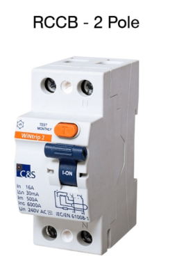
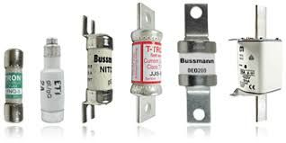

Circuit Breakers and Fuses
Circuit breakers and fuses are critical protective devices used in industrial electrical and automation systems. Their primary function is to protect electrical circuits, equipment, and personnel from damage caused by abnormal conditions such as overloads, short circuits, and faults. By interrupting the flow of excessive current, these devices prevent overheating, fire hazards, and equipment failure, thereby ensuring safe and reliable operation of automation systems.
Need for Circuit Protection
Electrical circuits are designed to operate within specific current limits. When these limits are exceeded due to faults or excessive load, serious damage can occur.
Circuit protection is required to:
- Prevent damage to cables and insulation.
- Protect motors and control equipment.
- Reduce risk of fire and electrical accidents.
- Ensure continuity and reliability of operations.
Internal Structure

- Actuator lever: used to manually trip and reset the circuit breaker. Also indicates the status of the circuit breaker (On or Off/tripped). Most breakers are designed so they can still trip even if the lever is held or locked in the “on” position. This is sometimes referred to as “free trip” or “positive trip” operation.
- Actuator mechanism: forces the contacts together or apart.
- Contacts: allow current when touching and break the current when moved apart.
- Terminals
- Bimetallic strip: separates contacts in response to smaller, longer-term overcurrents.
- Calibration screw: allows the manufacturer to precisely adjust the trip current of the device after assembly.
- Solenoid: separates contacts rapidly in response to high overcurrents.
- Arc divider/extinguisher
Types of MCB based on Tripping Characteristics
- Type B:
- In type B, the MCB trips between 3 to 5 times of full load.
- Operating current 0.4 to 13 seconds.
- Type of load: Resistive loads.
- Response: React quickly to overloads.
- Uses: Incandescent lighting, bulbs, heaters. Residential applications.

- Type C:
- In type C, the MCB trips between 5 to 10 times of full load. Used in residential or industrial applications.
- Operating current 0.4 to 5 seconds.
- Type of Load: Slightly inductive loads.
- Response: React more slowly.
- Uses: Highly inductive loads such as motors, Air conditioners, fans, and household appliances.

- Type D:
- In type D, the MCB trips between 10 to 20 times of full load. This is used in industrial or commercial applications where there could be chances of the higher value of short circuit currents in the circuit.
- Operating current 0.4 to 3 seconds.
- Type of Load: Inductive loads.
- Response: React more slowly.
- Uses: Very high inrush inductive currents such as small transformers, UPS, small motors, pumps.

Types of MCB based on Poles
- A single-pole (1P): MCB provides switching and protection only for one single phase of supply.
- A two-pole (2P): provides switching and protection for both phase and neutral.
- A three-pole (3P): MCB provides switching and protection only to three phases and not neutral.
- A three-pole with neutral (3P+N): has switching and protection to all three phases and additionally neutral.
- A four-pole (4P) MCB: is similar to Three poles neutral.

Applications in Industrial Automation
In automation systems, circuit breakers and fuses are used to protect:
- Motors and drives.
- PLCs and control panels.
- Power supplies and auxiliary circuits.
- Wiring and distribution systems.
Proper coordination between fuses and circuit breakers ensures selective protection and minimizes downtime.

What is RCCB?
RCCB is Residual Current Circuit Breaker. This residual current device is basically an electrical wiring device that disconnects the circuit whenever there is leakage of current flow through the Human body or the current is not balanced between the phase-conductor. It is the safest device to detect and trip against electrical leakage currents, thus ensure protection against electric shock caused by direct contacts. RCCB is generally used in series with an MCB which protects them from over current and short circuit current.
What is ELCB?
ELCB stands for Earth Leakage Circuit Breaker. They have the same function as RCCB but are voltage-sensing devices. However, this is an old technology and is not in common use. RCCB, being a current-sensitive device, has a better advantage over ELCB as it detects leakage current directly, operates faster, does not depend on earth resistance, and provides more reliable protection against electric shock and fire hazards.

Fuses
A fuse is a simple protective device that interrupts the circuit when excessive current flows. It consists of a metal element that melts when the current exceeds a predetermined value, thereby breaking the circuit.
Key characteristics of fuses:
- Simple construction and operation.
- Fast response to short-circuit conditions.
- Reliable and cost-effective protection.
- Requires replacement after operation.
Fuses are commonly used in:
- Control circuits.
- Electronic equipment protection.
- Small motors and auxiliary circuits.
While fuses offer reliable protection, their main limitation is that they must be replaced once they operate.